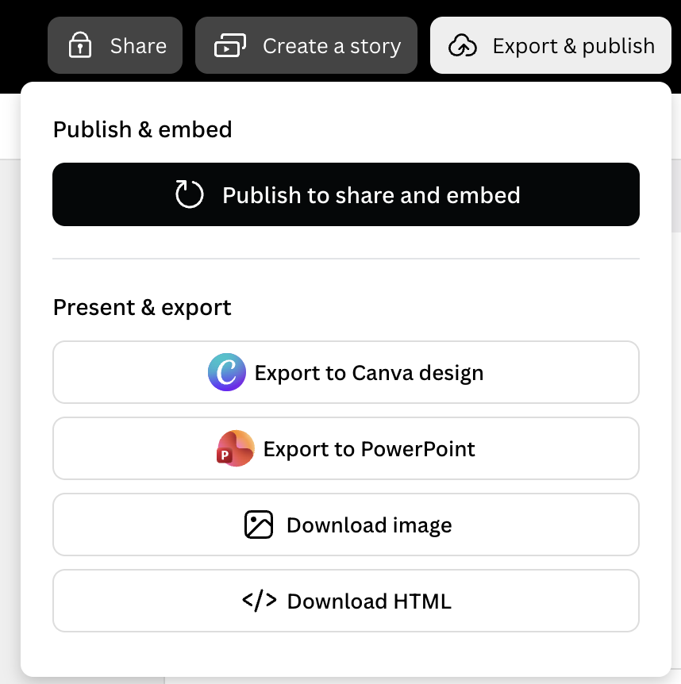
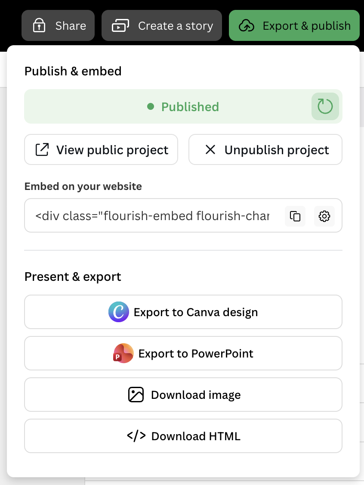
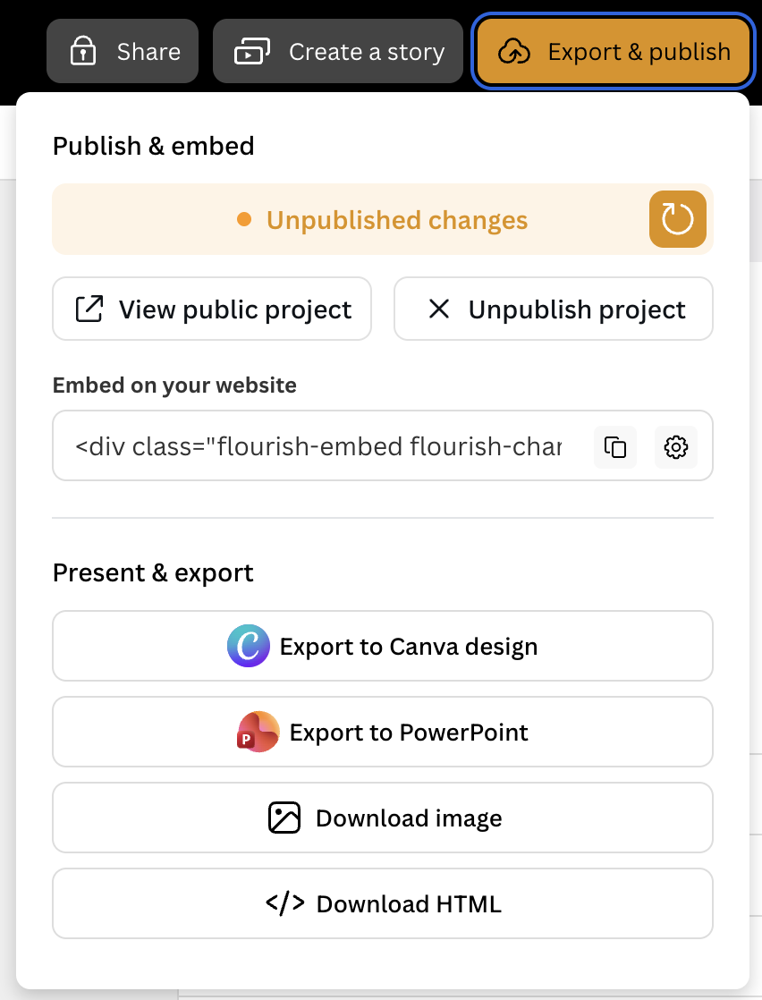

FLOURISH · PRODUCT ENGINEERING
Redesigning publishing and export
I worked with another engineer to rebuild Flourish’s publish and export interface, covering the different states a visualisation can be in and the actions available to the person publishing it.
Make the next action clear
Publishing a chart for the first time, sending it for approval and updating a published chart each call for different actions. The interface also needed to show which exports were available or locked and which embed settings a person could use.
One chart, different choices



Building and testing it together
I co-built the component-based interface with another engineer. My work included UI components styled with CSS Modules, automated tests and rollout. We used the different publishing and export states to guide what the interface needed to show and what the tests needed to cover.
From feature flag to full release
We shipped the new dialog behind a feature flag in February 2026 with automated coverage. After launch we fixed issues with republishing and copying links, then removed the legacy dialog in March 2026.